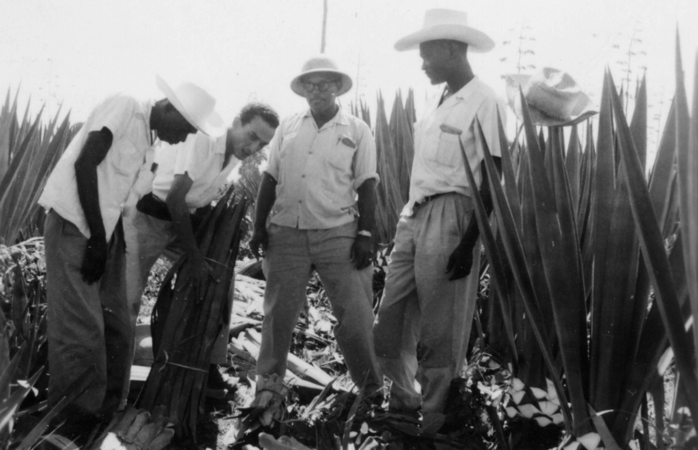

Jean Leopold Dominique
The Agronominist who try to save the rice production in Haiti

Jean Dominique as a young agronomist in Bayeux, northern Haiti.
Here is a timeline of the life of Jean Leopold Dominique:
- 1930 - Born in Port-au-Prince, Hayti
- 1948 - Dominique started his studying in Agronomy at the Faculte d'Agronomie
- 1951 - Jean earned his degree then received a scholarship to studied genetically-modified in cacao and caffe plant at the the Ecole Superieur d'Application d'Agriculture Tropicale a Paris, France.
- 1955 returned to Hayti while leaving his girlfriend pregnant and began to work as an agronomist in the North Departement.
- 1960 - Relesead from prison. Also founded Haiti's first film club at the Institut Francais in Port-au-Prince
- 1961- co-directed and narrated Haiti's first documentary film, Mais, je suis belle(But, I am beautiful
- 1980-nflee from Hayti
- 1987 -nJean Rabelle.
- 1988- massacra.
- 2000 - Questionned Aristid about state corruption.
- 2000 - Assasinated.
“For some, the solution is to destroy the thermometer in order to hide the fever. To assassinate a journalist, to silence a defender of rights and freedom — will that change the political situation? It is clear today that only those critical voices might allow the ruling party to appreciate its proximity to the precipice toward which its leaders rush headlong, dragging with it the entire country. Only those critical voices might allow the ruling party to save itself from collective seppuku. And they called him Cassandra.”
– Michèle Montas